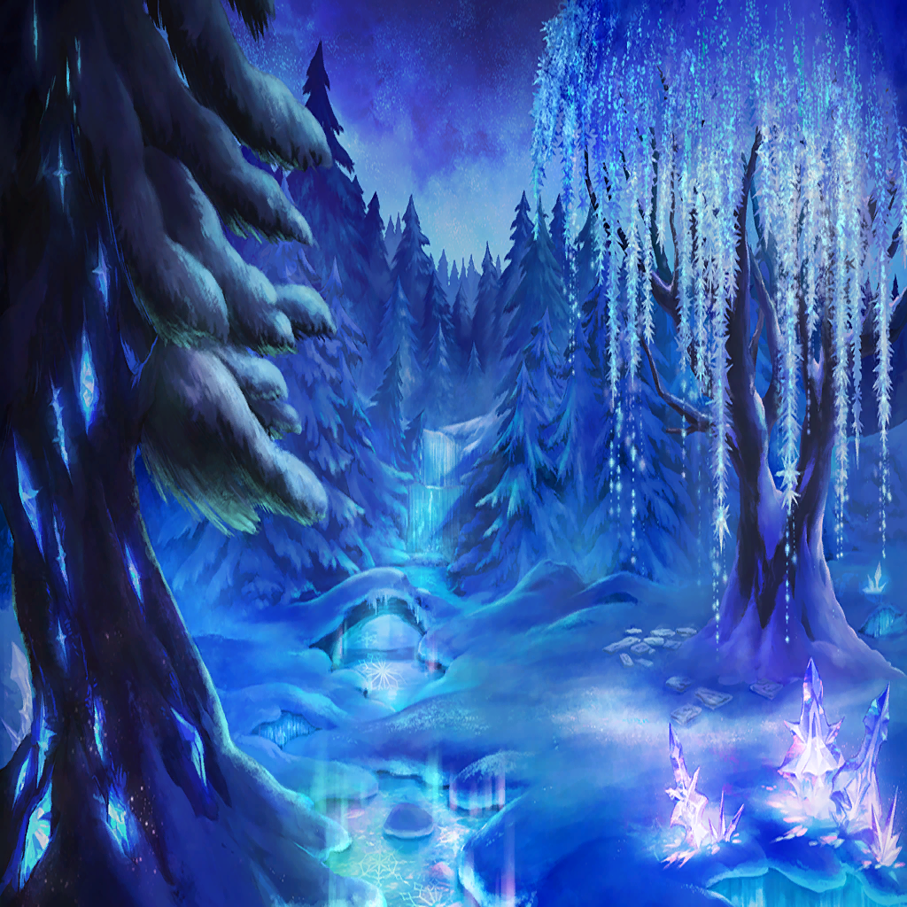

|
|
| |
誰もが眠ったように静かで |
|  |
| |
凍りついた時間、冷え切った風の音
雪を踏みしめる音だけが響く
叫びを聞く人はいない |
| エフィリンド |
寝かせてあげて…！ |
| |
虫たちがハイエルフの寝床に群がる |
| エフィリンド |
静かに、ゆっくり…！
せめて最期まで────!! |
| |
ハイエルフたちは眠ったまま
虫たちの格好の餌として喰われていく |
| |
足音は、ひとつ
哭き声を上げるのは、ひとり |
 |
| |
叫び声を上げることなく
閉じたまぶたをくり抜かれ
咀嚼されていくハイエルフたち |
| エフィリンド |
やめ、て…っっ |
| |
骨の砕ける音が
内臓の引き出される音が
皮をはむ音が、血を啜る音が |
|
| エフィリンド |
もう、聞きたくない…！ |
| |
鼓膜に刻まれる |
| エフィリンド |
…ッ |
| エフィリンド |
し、し、し、死ん、だ………… |
| エフィリンド |
わ、わ、わ、私、が、殺した…っ!!
ね、ね、眠りたいと言うから… |
| エフィリンド |
でも、でも…！
ご…ごめんな、さ、い…！
ごめんなさい…！ |

レティシア |
『殺されたハイエルフの血とアルケミィは
闇へと反転し、殺したハイエルフを侵す…
裏切りの血の系譜を後世まで刻むべく…』 |
| |
嘘や罪や大きなケガが
化粧や香水では隠せないのと同じで |
レティシア |
『仲間だ家族だ同族だと騙した罪を
未来永劫に背負わせるべく』 |
| |
香りや幻の術では覆い隠し切れない
ダークエルフへと変わった血と魂の汚濁も…
侵されて反転した闇のアルケミィも… |
| アイナンナ |
『ずっと一緒にいてくれますか？』 |
| |
騙してしまった |
| エフィリンド |
『ええ。ずっと』 |
| |
眠らせてしまった
叶えたくない夢に
堕としてしまった |
| アイナンナ |
『ずっとですよ？』 |
| エフィリンド |
…………せんせ、せんせ
せんせ、だなんて………… |
| エフィリンド |
『そうです。ずっとです』 |
| エフィリンド |
わ、た、し…………！ |
| アイナンナ |
『それじゃあ今夜
一緒にベッドに入ってくれますか？』 |
| エフィリンド |
先生になんて、なれない…………！ |
| アイナンナ |
『もう怖い夢は見たくないんです。二度と』 |
|
| アイナンナ |
『怖い夢を見ても
センセとなら、怖くないから』 |
 |
レティシア |
『眩き者を弑逆せよ』 |
レティシア |
『汝、暗闇の王なり
闇の王、誰が為に、征かんや
誰が為に、戦わんや』 |
 |
レティシア |
『夢なき幾星霜の眠りを経て
“闇の王”が現れたなら、その刻は』 |
レティシア |
『その刻
約束の刃を受けて
お別れ』 |
| エフィリンド |
貴方は、そのとき
はじめて本当の眠りにつけるのだと………… |
| エフィリンド |
…………素敵な夢を、見ていたのね |
| エフィリンド |
眠れるのかしら
私は、どこでなら── |